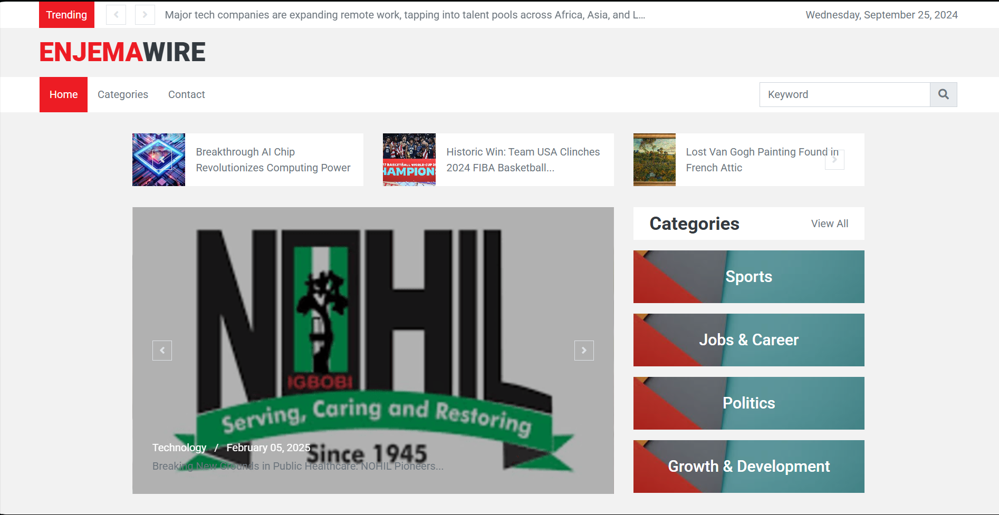
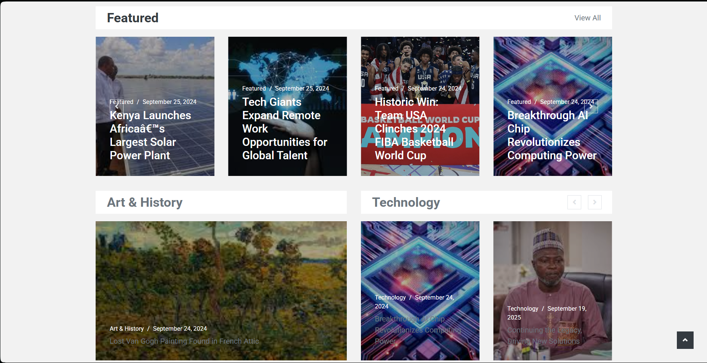
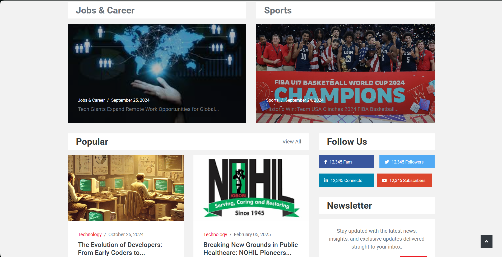
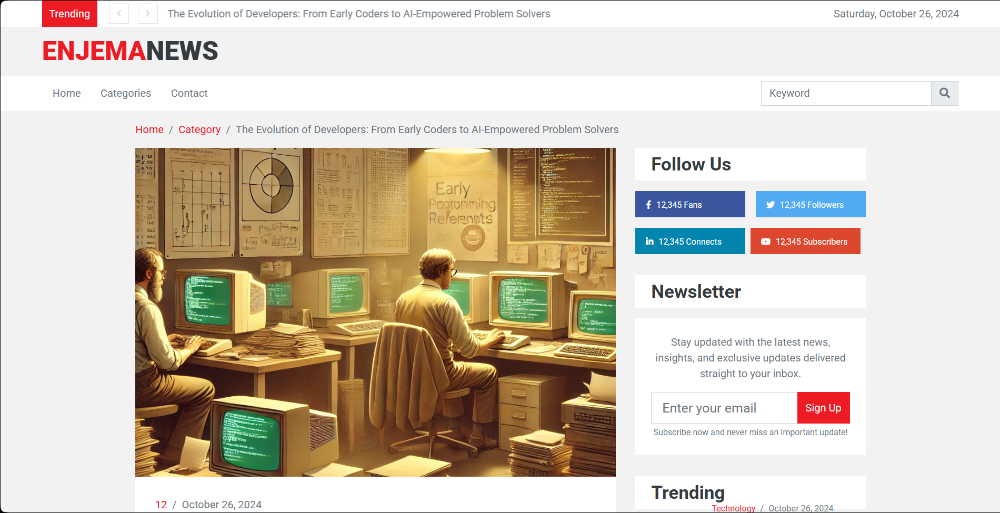
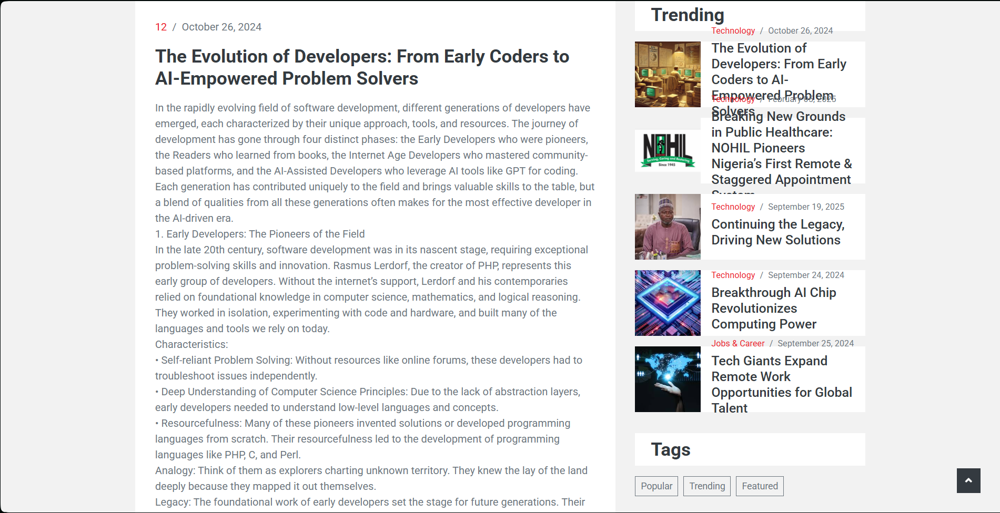
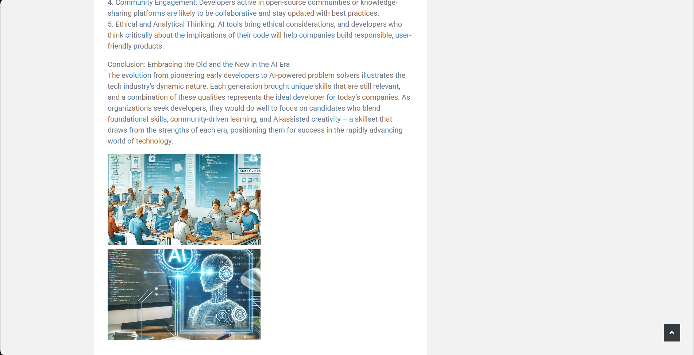
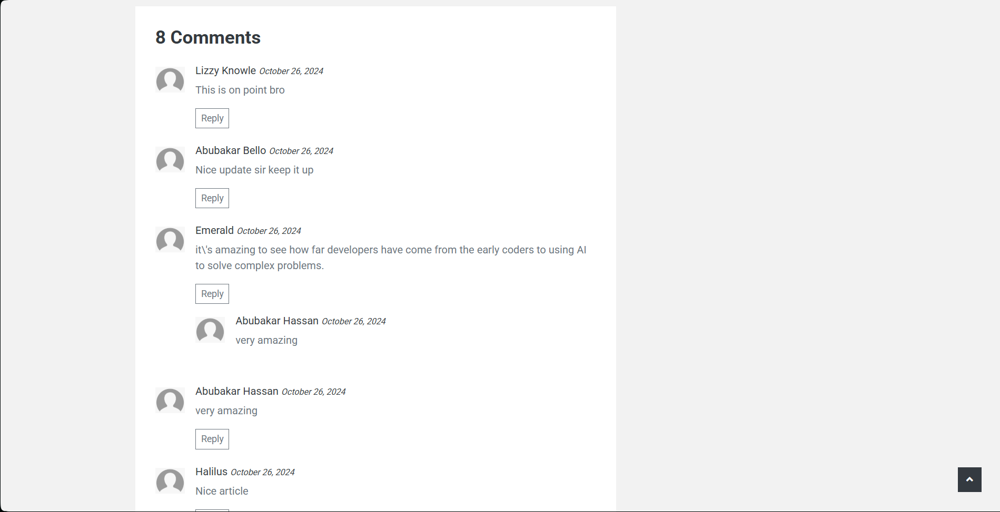
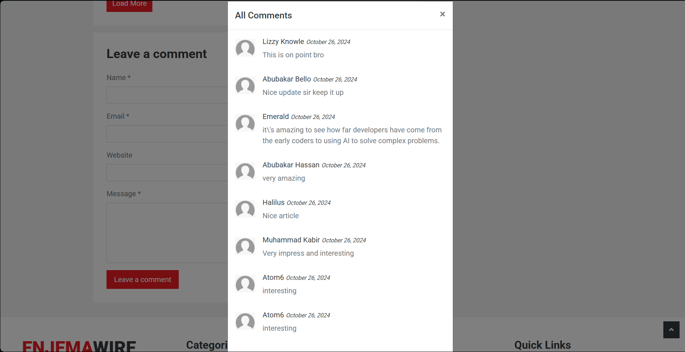

SCAN FIRST
Featured, trending and category blocks support fast editorial scanning.


A news interface has to support scanning quickly and reading deeply without losing the relationship between categories, trending stories and discussion.
The build uses a newspaper-like information hierarchy across the homepage and article views, then extends the record with comments and audience capture.





This section translates the supplied interface into the sequence of responsibilities visible in the build record.
Featured, trending and category blocks support fast editorial scanning.
Article pages shift from dense discovery to a more focused reading state.
Comments, newsletter and social links extend the article beyond a single page view.
A build record that connects the visible interface to the job the product is trying to do.
These are the actual project images supplied for the archive. They are shown without fabricated performance claims or fake client outcomes.
